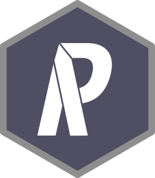

PRIORITIZR WORKSHOP MANUAL
2019-09-25
Chapter 1 Welcome!

Here you will find the manual for the prioritizr module of the Spatial Conservation Prioritization: Concepts, Methods and Application workshop held at CIBIO-InBIO, Vairão, Portugal. This manual contains instructions for setting up your computer, external resources, data used in the workshop, and teaching materials. Before you arrive at the workshop, you should make sure that you have correctly set up your computer for the workshop. We cannot guarantee a reliable internet connection during the workshop, and so you may be unable to complete the workshop if you have not set up your computer beforehand.
1.1 Setting up your computer
You will need to have both R and RStudio installed on your computer to complete this workshop. Although it is not imperative that you have the latest version of RStudio installed, you will need the latest version of R installed. After installing these programs, you will also need to install various R packages too.
1.1.1 R
The R statistical computing environment can be downloaded from the Comprehensive R Archive Network (CRAN). You can download the latest version of R (version 3.6.1) from here: https://cloud.r-project.org/. Please note that you will need to download the correct file for your operating system (i.e. Linux, Mac OSX, Windows). You may also require administrative permissions to complete the installation process.
1.1.2 RStudio
RStudio is an integrated development environment (IDE). In other words, it is a program that is designed to make your R programming experience more pleasant. During this workshop, you will interact with R through RStudio—meaning that you will open RStudio when you wish interact with R. You can download the latest version of RStudio here: http://www.rstudio.com/download. RStudio is updated several times during the year, and it will tell you when an update is available. When you start RStudio, you will see two key parts of the user interface:

You can type R code into the Console part of the user interface and press the enter key to run them.
1.1.3 R packages
An R package is a collection of R code and documentation that can be installed to enhance the standard R environment with additional functionality. Currently, there are over ten thousand R packages available on CRAN. Each of these R packages (mostly) aim to serve a specific need, such as reading Excel spreadsheets, downloading satellite imagery data, downloading and cleaning protected area data, or fitting environmental niche models. In fact, R has such a diverse ecosystem of R packages, that the question is (generally) not “can I use R to do …?” but “what R package can I use to …?”. During this workshop, we will use various R packages. To install these R packages, please run enter the code below in the Console part of the RStudio interface and press enter. Please note that you will require an internet connection to install the packages and the installation process may take a while to complete.
install.packages(c("sf", "tidyverse", "sp", "rgeos", "rgdal", "raster",
"prioritizr", "prioritizrdata" "Rsymphony", "mapview"))1.2 Getting help
There is a wealth of resources available for learning how to use R. Although not required for this workshop, I would highly recommend that you read R for Data Science by Garrett Grolemund and Hadley Wickham. This veritable trove of R goodness is freely available online. If you spend a week going through this book then you will save months debugging and rerunning incorrect code. I would urge any and all ecologists – especially those working on Masters or PhD degrees – to read this book. I even bought this book as a Christmas present for my sister—and, yes, she was happy to receive it! For intermediate users looking to skill-up, I would recommend the The Art of R Programming: A Tour of Statistical Software Design by Norman Matloff and Advanced R by Hadley Wickham. Finally, if you wish to learn more about using R as a geospatial information system (GIS), I would recommend Geocomputation with R by Robin Lovelace, Jakub Nowosad, and Jannes Muenchow which is also freely available online. I also recommend Applied Spatial Data Analysis by Roger S. Bivand, Edzer Pebesmam and Virgilio Gómez-Rubio too.